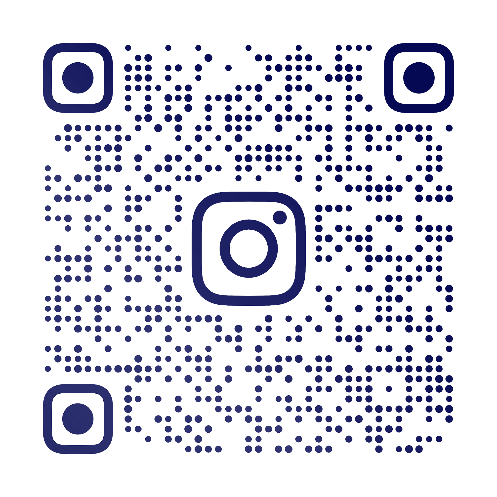

Xidmətlər
- Windows əməliyyat sisteminin qurulması, program təminatı və istifadəçinin istəyinə uyğun proqramların yüklənməsi.
- Server sistemlərinin qurulması: Windows Server 2008-2022 (AD, DNS, DHCP, File Server).
- Cisco və HP switch-lərin portlarının konfiqurasiyası.
- ESXi 6.0-7.0 virtual maşınların qurulması və idarə edilməsi.
- Kerio Control-un Linux sistemi üzərində qurulması.
- VeeamBackup proqramı vasitəsilə kompyuterlərin yedəklənməsi.
- VPN tunelin qurulması və icazələrin verilməsi.
- Modemlərin sazlanması və idarə edilməsi (Tp-Link, UniWifi, Zyxel və s.).
- Antivirus lisenziyalaşdırmaq və nəzarət etmək.
Hal-Hazırda nəyə ehtiyacınız var?
Kompyuterim fiziki nasazdır!
Kompyuterimi yeni almışam!
Bizimlə əlaqə saxlayın:
Telefon: +994 55 956 31 19
